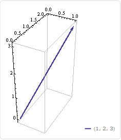

Fourier Transform
A short time ago I had a crazy realization; all of the math I've done so far is actually Linear Algebra in disguise. scalars and vectors are just matrices of different sizes. Addition, subtraction, multiplication, and division are all more generally defined on matrices. But more than that, all operations I've learned so far are just matrix operations. All you need to do is multiply by the correct matrix and voilà, you just took a derivative, or so much more.
The first thing you need to understand about functions to understand Discrete Fourier transformation (DFT) is that they are really just a set of pairs of points. (really they are a lot more than that, if you're curious check out set relations). A simple example of a function is f = {(0,1),(1,2),(3,4)}. This function maps 0 to 1, 1 to 2 and 3 to 4, which would look like this
 . As you can see this function, f, is made up of three discrete points. This is where the 'discrete' in DFT comes from, it can only be performed on discrete functions. (to be clear Fourier transforms can be performed on continuous functions, but thats not what this is about)
. As you can see this function, f, is made up of three discrete points. This is where the 'discrete' in DFT comes from, it can only be performed on discrete functions. (to be clear Fourier transforms can be performed on continuous functions, but thats not what this is about)
Here's where it gets complicated (feel free to skip to the next paragraph for a less complicated summary). Because functions are effectively a list of points we can think of them as vectors. These vectors are in function space. Function space (for our purposes) is an n dimensional space where n is the number of points in your function. Each successive value in the function is the component of the function vector in that direction. Using f as an example the function vector would look like . If you have more data points in your function you would need higher dimensional space to visualize it. If you are familiar with linear algebra than you will probably be familiar with the concept of Basis vectors . Because all the vectors in function space are functions, certain sets of functions can form a set of orthogonal basis vectors for function space. (It's odd to think that two functions can be orthogonal, this helped me a lot).This means that any arbitrary function can be expressed in terms of that set of functions. One such set is the set of all functions of the form sin(kx) and cos(kx), where k is an integer.
Changing a set of data to be represented in terms of sin(kx) and cos(kx) is called a Fourier transform. If we then plot k on the x axis and the value found with this transform for that k on the y axis we can see what frequencies (what k value) is most preventive in the function we are transforming. When i started learning about this it took me a little while but once i made the connection to linear spaces i realized it was just a matter of finding the right matrix to multiply by to transform data in to or out of Fourier space.
This program can take a set of discrete data in Cartesian space, and transform it in to Fourier space or visa versa via the Fourier matrix. It is dependent on numpy for the matrix creation and math, and matplotlib for plotting the data.
The Sierpinski Triangle
First, if you don't know about fractals, read about fractals, they are freaking awesome.
The Sierpinski Triangle is a relatively simple fractal. And, inspired by Chaos and Fractals I wrote two programs to procedurally generate it. One is based on addressing each node while the other is based on a chaotic process. If both are carried out an infinite number of times they will generate the same figure.
By Randomness
Start with three points (the three points of the largest triangle) and label them 1, 2 and 3. Then pick another point, anywhere. Role a 3 sided die (or a random number generator), if you role a three place a point 1/2 the distance from your initial point to point number three. Then, repeat that process for the new point. If you do this infinite times you will generate the Sierpinski gasket. Each frame of the .gif is a zoomed in image of the top triangle of the previous frame.

By Binary Address
The Sierpinski triangle can be though of as a binary tree. You can assign a unique id to each node in a binary tree in a very simple way. To get to a node all you do is start at the base of the tree and go either left or right at each subsequent node encountered. So if we list all the turn taken to get to a node we get a unique string which describes the path to that node. eg left right left left right. Because there is only two choices we call this a binary string, it is common to let 0 mean left and 1 mean right which would make our previous example in to 01001. using this process we address an arbitrarily large number of nodes and construct the Sierpinski triangle.Global Population
This is a visualization I wrote using d3 to track trends in global population.